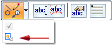
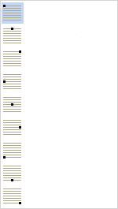

Edit a text profile
Once a text profile is placed, you can change its location on a part, reformat the text within the text box, add and delete text, and change the way the text is anchored at the placement point. Associative text in the profile is updated automatically and explicitly using several methods.
Edit profile text and formatting
-
Click the text profile object to modify.
-
On the command bar, click the Text Step button
 to edit text and text attributes.
to edit text and text attributes. -
In the Text dialog box, do any of the following.
-
Select the text to delete.
-
Type new text or add and format property text. Apply formatting to a property text string by clicking inside the string to activate it—eligible property text changes color—and then clicking the Format button. The Format Values dialog box shows you the available formatting options based on the type of property text you selected.

-
Press the Enter key to start a new line; press it again to start a new paragraph.
-
For multiline text, you can change the alignment of individual words or characters. Select the text, and then click the alignment option you want to apply to it.
-
Although font style and font size is applied to all text in the profile, you can apply boldface and italics font changes to individual characters, words, and lines of text. First select the text to change, and then click one of the Style buttons.
-
-
In the Text dialog box, click the Apply button to apply each change as you make it or to apply all changes at once.
Update a text profile containing property text
Associative text in a text profile is updated automatically:
-
When the value of the property text changes or when the profile sketch is edited.
-
During document transition, for example, when you open or save a file.
To explicitly update property text in text profiles and features, use the following commands:
-
In an assembly document, on the Tools tab→Update group:
-
Update Active Level—Updates the active assembly and all the documents below.
-
Update All Open Documents—Updates an assembly when you edit a part in the context of the assembly.
-
-
You also can update all property text using the Update All command, which is available:
-
In a draft document—Choose Home tab→Property Text group→Update All.
-
In a model document—When working in an ordered sketch, choose Home tab→Property Text group→Update All.
-
In a model document, when you are working with PMI elements, choose PMI tab→Property Text group→Update All.
-
Reposition a text profile
You can reposition a text profile by selecting it and moving it.
-
Select the text profile object to modify. You may need to use QuickPick to select only the text profile.
-
In 2D or 3D environments, you can drag the profile to move it.
In 3D environments, you also can use the Move command on the Text Profile command bar.

-
If the text profile object is constrained, click the Reposition button on the Text Profile command bar to delete the anchor constraint, and then move the text profile.
Tip:If the text profile is relationship-connected, a warning will be displayed to that effect. Click OK to continue.
Change text profile anchor point
When you place a text profile, a target cursor is displayed at the anchor point on the text profile box. When you click a placement point in the graphics window, this anchor point is matched to the placement point to position the text.
To change the anchor point:
-
Select the text profile object to modify.
-
On the command bar, click Anchor
 .
. -
In the Anchor option list, click one of the nine anchor points. The default is top-left.

The text profile anchor position updates immediately in the graphics window.